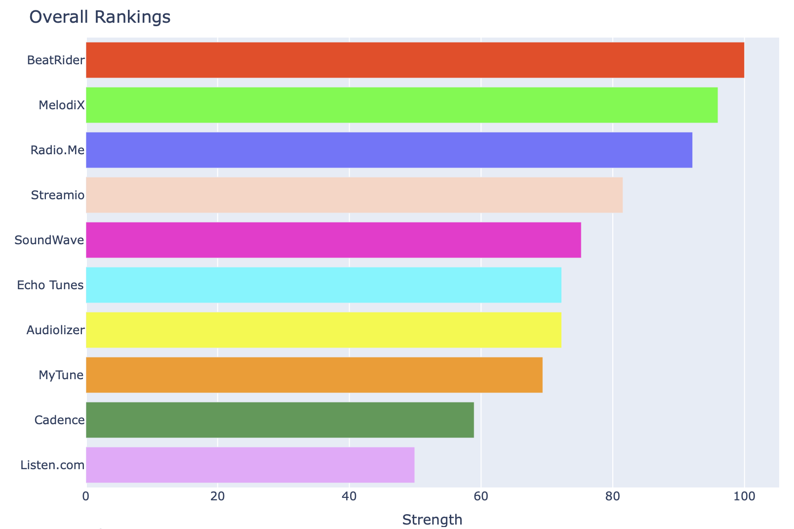

The launch of the review analysis project has me working on various marketing tasks. Naturally, I built a tool to let LLMs help with the creative process. It’s called Text Tournament and the purpose is to compare ideas for company names, taglines, product descriptions and ad copy in a tournament-style competition. The project is available on GitHub under the MIT license.
This is the companion blog post to the project which explains my thought process and technical details.
The Tournament
The user gives a set of competitors and a set of attributes. Each competitor is paired with every other competitor on each aspect. For example, if there are three name choices for a Spotify competitor, say ‘Streamio’, ‘MelodiX’ and ‘SoundWave’ and two attributes ‘memorability’ and ‘pronounceability’, the tournament would look like this:
| Competitor 1 | Competitor 2 | Attribute |
|---|---|---|
| Streamio | MelodiX | memorability |
| Streamio | SoundWave | memorability |
| MelodiX | SoundWave | memorability |
| Streamio | MelodiX | pronounceability |
| Streamio | SoundWave | pronounceability |
| MelodiX | SoundWave | pronounceability |
Each of these pairings is turned into a prompt for the LLM, like “Compare the company names Streamio and MelodiX. Which one is more memorable?”
Each pairing is run twice, once as A vs. B and once as B vs. A. The reason is that LLMs tend to have a bias towards picking the first option (Dominguez-Olmedo, Hardt, and Mendler-Dünner 2024).
Structured output & reasoning
To make sure that the LLM’s answer is interpretable, I used instructor. Further, I asked the model to not just pick the winner but also to provide a reason. This is done with a simple Pydantic model:
class Rating(BaseModel):
reason: str
preferred: Literal[1, 2]By asking for the reason first, the tokens generated as the reason are influencing the token chosen for the “preferred” field. This makes use of the auto-regressive nature of the model.
The benefit of the reason is that it typically improves the model’s thinking and it also provides an inspectable record. For example, here are two outputs from the tournament above:
Streamio vs MelodiX on pronounceability:
Streamio is straightforward to pronounce with a clear phonetic structure, while MelodiX may cause hesitation due to the unusual capital ‘X’ at the end.
MelodiX vs SoundWave on memorability:
The name ‘MelodiX’ is unique and contains a playful twist with the ‘X’ at the end, making it more distinctive and easier to remember. The name ‘SoundWave’ is more generic and can be easily confused with other similar terms in the tech and music industry.
Ranking competitors with the Bradley-Terry model
The simplest approach is to count the number of wins for each competitor. However, this doesn’t take into account the strength of the competitors. A competitor that has only faced weak competitors might have a high win count but not be the best choice. I considered two ranking methods that account for this: the Elo (Elo and Sloan 1978) model and the Bradley-Terry (Bradley and Terry 1952) model.
Elo is better known due to the popularity of ranking method in Chess. Many people are familiar with the concept of a player’s Elo rating and how it changes after a match.
The downside of Elo in this context is that ordering of the matches matters. Thce results of the LLM calls are coming in all at once. I’d have to artificially order the matches to use Elo. This is not ideal.
The Bradley-Terry model is a better fit for this situation. It’s a probabilistic model that estimates the strength of competitors based on the outcomes of matches.
The probability of competitor \(i\) beating competitor \(j\) is given by:
\[ P(i \text{ beats } j) = \frac{r_i}{r_i + r_j} \]
where \(r_i\) is the strength of competitor \(i\). The model is fit by modifying the strengths r to maximize the likelihood of the observed outcomes.
The Bradley-Terry model is also the basis for Direct Preference Optimization (Rafailov et al. 2024). So I’m asking an LLM that was likely trained with DPO to do be a ranking model itself. So meta. This also means that the outputs of the ranking could be used as inputs to the DPO model. For example, a larger model could be used to teach a smaller model how to rank the competitors.
Results
I ran a tournament with more name options and additional attributes to compare them on. Here is the overall result:

Does it match your preferences?
The full results with rankings on each attribute are available on this Github page.
Validity
The rankings produced by the tournament are not a replacement for tests with real users and human judgment. LLMs are known to be politically biased, may give random answers, and are heavily influenced by how a question is posed. The rankings are a tool to help with the creative process, not a definitive answer. If you decide to use it, I suggest starting with a low-stakes use case like the title of a blog post.